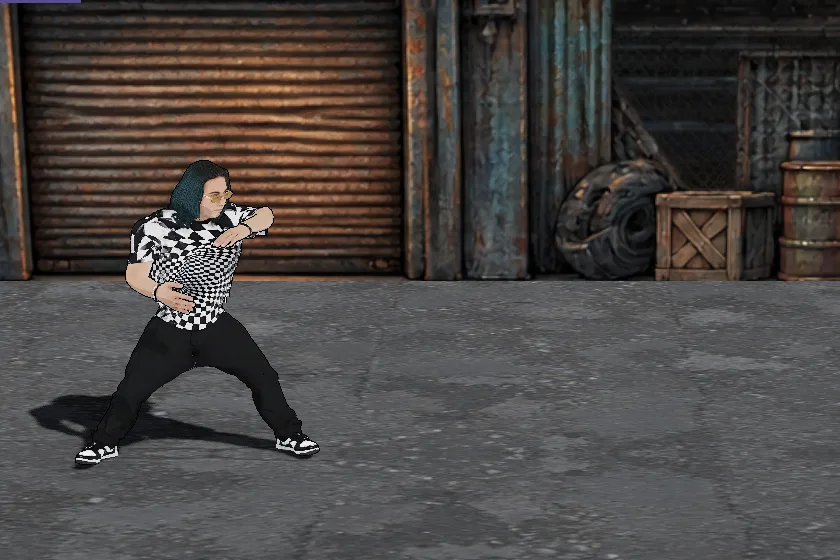
移動移動
左スティックWASD
左右で進み、上下で奥行きを移る。待機は構えた姿勢（Fight Idle）。
素手・金属バット・ダーツ・チェーンソーの 4 つを持ち替える。攻撃力が他の 2 人の 1.2 倍（表の値は掛けた後のもの）。回避は前へ跳び、回復は歌で敵ごと踊らせる。 武器の持ち替え順は 素手 → 金属バット → ダーツ → チェーンソー → 素手。動きはすべて 1 面で実際のボタン入力を流して撮ったもの（20 コマ/秒）。
| □J | 素手のパンチ（武器を持っているときは武器を使う） |
| ×K | キック／倒れた敵が近ければ追い打ち |
| R2U | 武器を使う |
| L2R | ダーツの補充／チェーンソーの紐引き |
| L1Tab | 武器の持ち替え |
| R1Space | 回避（前方宙返り） |
| △O | 飛び膝蹴り |
| ○E | 長押しで歌って回復（敵も踊る） |

左右で進み、上下で奥行きを移る。待機は構えた姿勢（Fight Idle）。
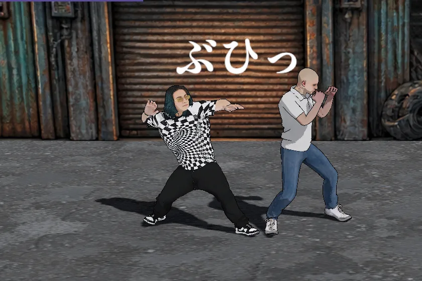
投げ下ろし（1,200） → 左アッパー（2,400） → 右ストレート（3,120）。
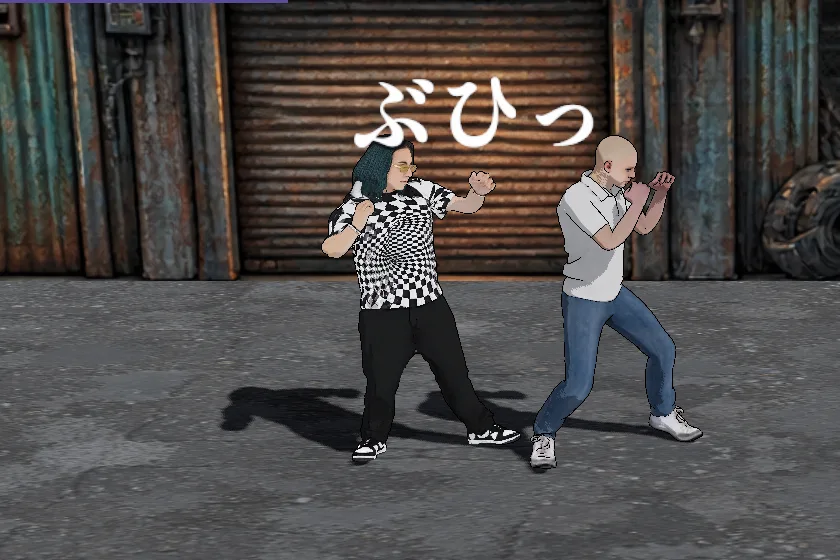
左前蹴り（1,680） → 右ミドル（2,400） → 立ち蹴り（3,600）。
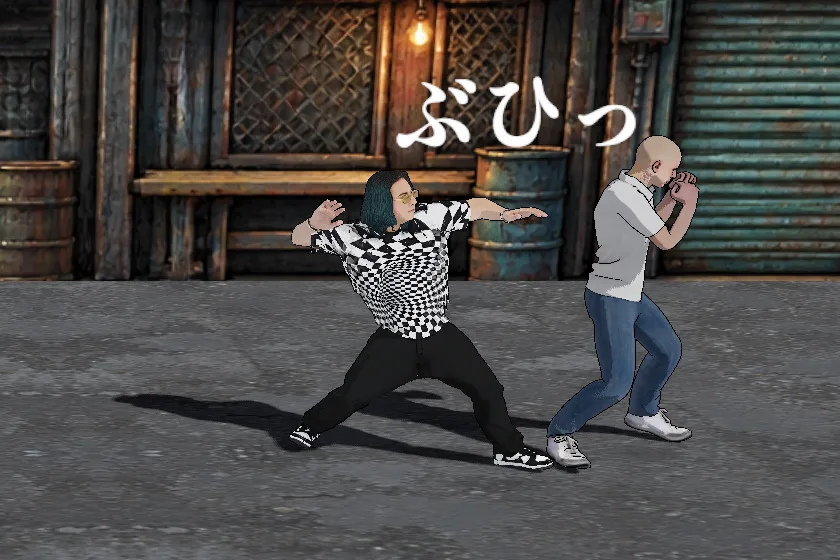
投げ下ろし（1,200） → 左アッパー（2,400） → 左前蹴り（1,680） → 右ストレート（3,120） → 立ち蹴り（3,600）。壁際（画面の端）に追い込んだ敵には 5 段すべて当たる（撮影は敵の後ろ 0.5 m が画面の端）。壁際以外では 4 段目の右ストレートで敵が離れ、5 段目は届かない。
投げ下ろし（1,200） → 左前蹴り（1,680） → 投げ下ろし（1,200） → 左アッパー（2,400）。
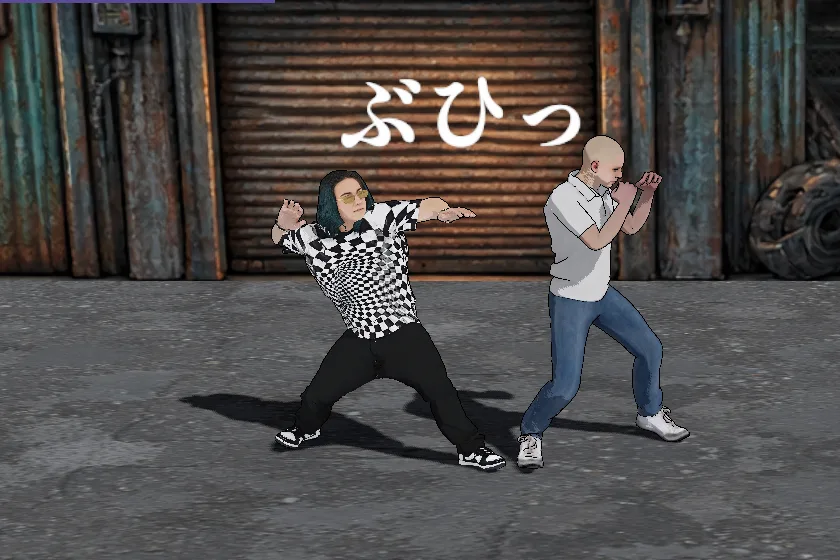
投げ下ろし（1,200） → 左前蹴り（1,680） → 右ミドル（2,400） → 右ストレート（3,120）。
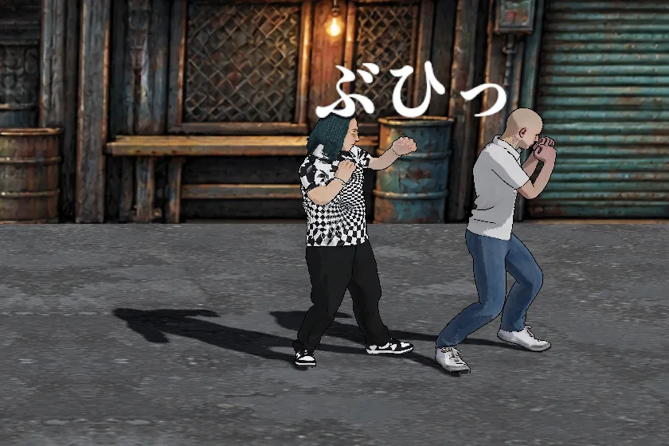
左前蹴り（1,680） → 右ストレート（3,120） → 左アッパー（2,400） → 投げ下ろし（1,200） → 左前蹴り（1,680） → 右ストレート（3,120） → 立ち蹴り（3,600）。壁際（画面の端）に追い込んだ敵には 7 段すべて当たる（撮影は敵の後ろ 0.5 m が画面の端）。壁際以外では 2 段目の右ストレートで敵が約 1 m 離れ、3 段目以降は届かない。
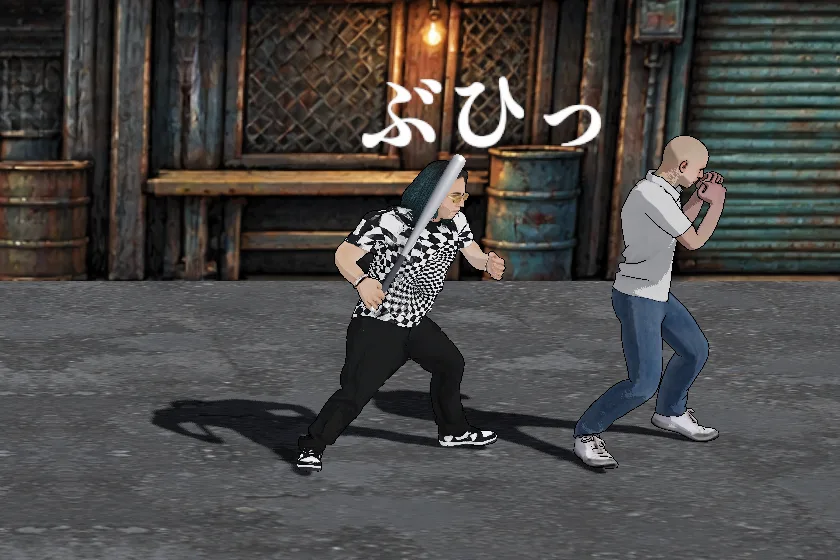
L1 で 素手 → 金属バット → ダーツ → チェーンソー → 素手 と持ち替える。R2 か □ で振り、3 段まで繋がる。バットの先が体の前へ出た瞬間に当たる。壁際（画面の端）に追い込んだ敵には 3 段すべて当たる（撮影は敵の後ろ 0.5 m が画面の端）。壁際以外では 1 段目で敵が離れ、2 段目以降は届かない。
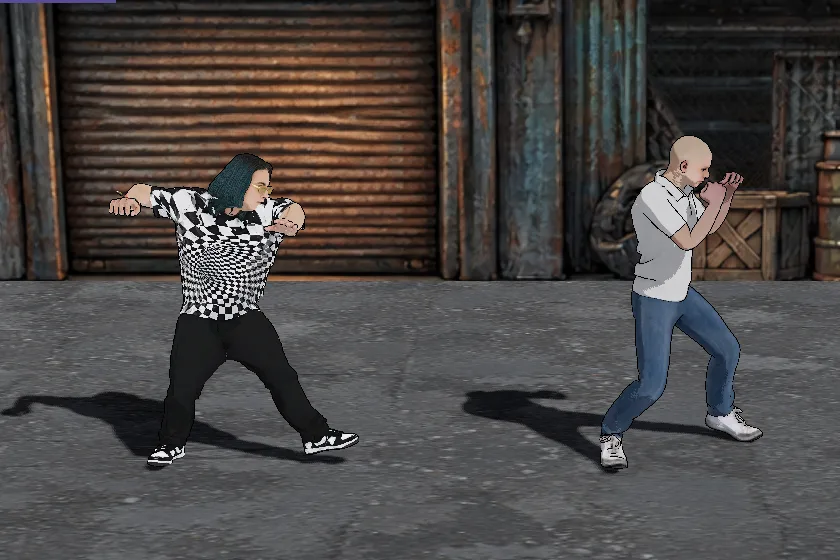
R2 か □ で投げる。投げた瞬間に正面へ判定が出て、見た目のダーツが着弾点へ飛ぶ。当たった敵に確率でどく・まひが付く。
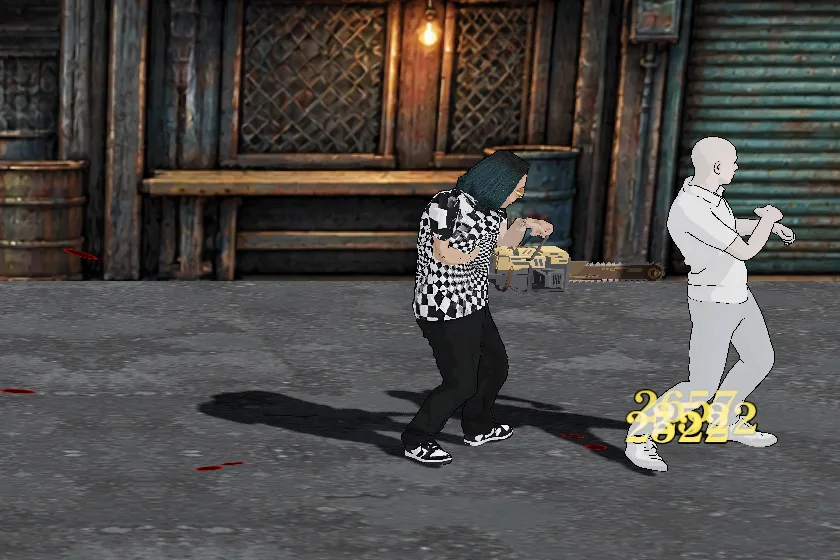
持ち替えると自動で紐を引いてエンジンを掛ける（1.6 秒）。R2 か □ で横薙ぎ → 切り返し → その場で一回転。燃料は 30 秒で、0 になると止まる。L2 で紐を引き直すと満タンで掛かる。壁際（画面の端）に追い込んだ敵には 3 段すべて当たる（撮影は 1.3 m 先の敵の真後ろが画面の端）。壁際以外では 1 段目で敵が離れ、2 段目以降は届かない。
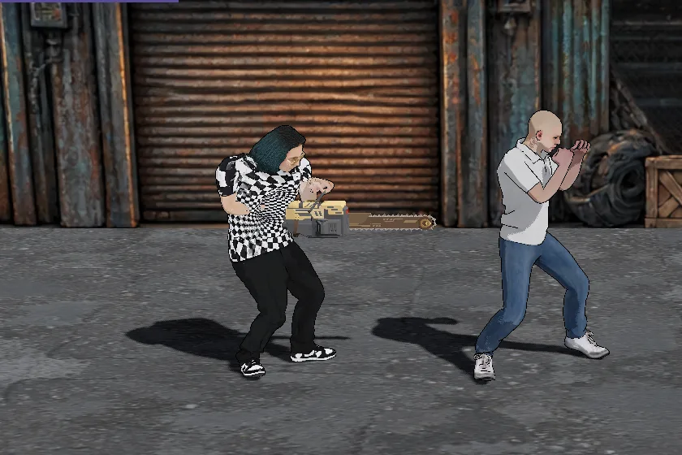
エンジンが回っている間は、振らなくても刃に触れている敵を削る。吹き飛ばさない。
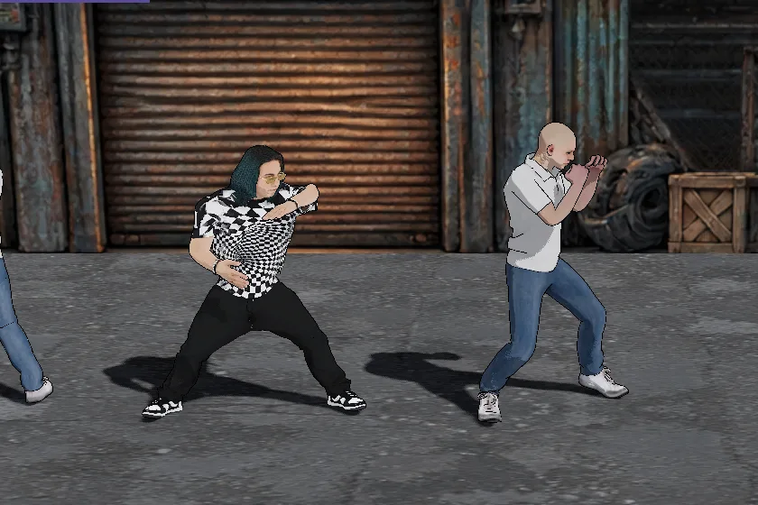
△ で飛び膝を入れ、空中で 2 発殴ってから着地する。
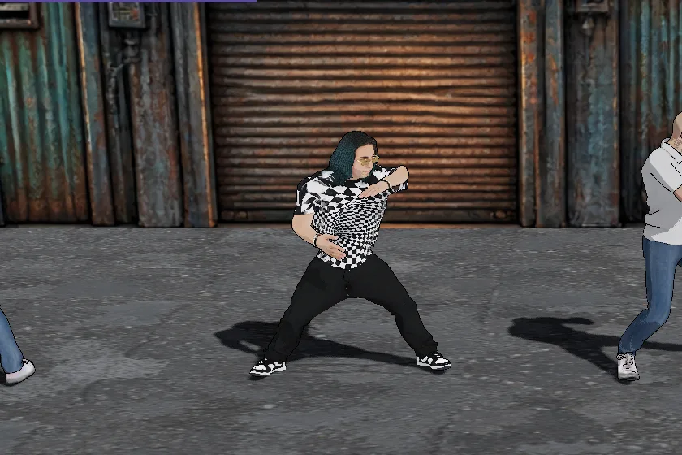
○ を押している間マイクを持って歌い、HP を回復する。歌っている間、ボス以外の敵は踊りだし、攻撃も移動もしない（踊っている敵も回復する）。
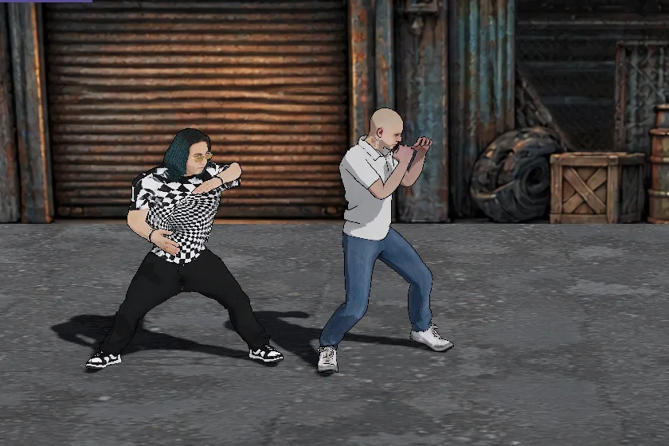
向いている側へひねりを入れて宙返りする。跳んでいる間はずっと無敵。
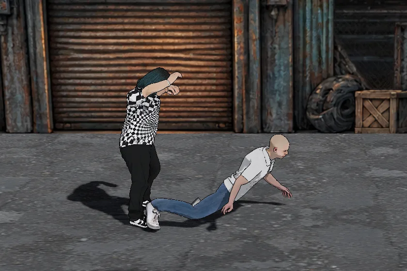
倒れて寝ている敵の頭が、向いている側 1.6 m 以内（後ろは 0.3 m まで）にあるときの ×。その場で跳んで両足で踏む。× を押すたびに追い打ちを行う。